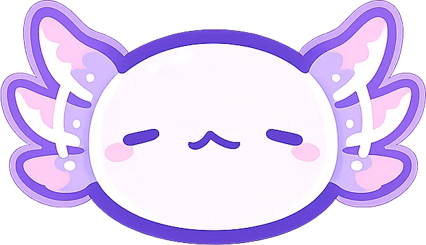
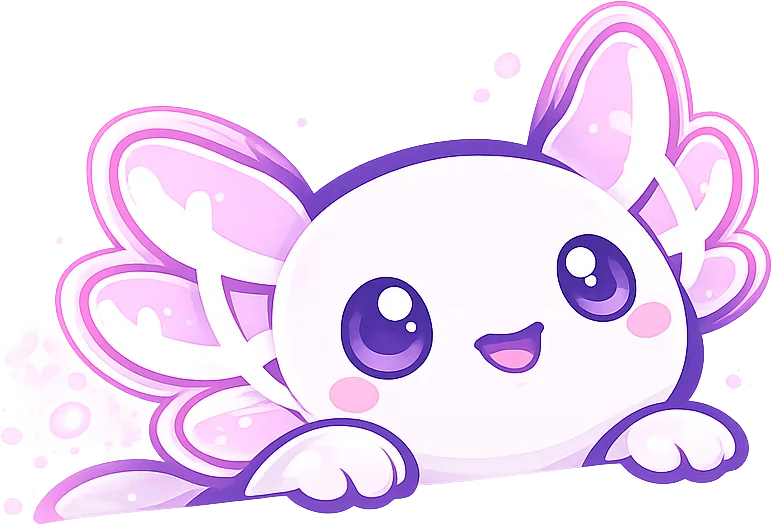
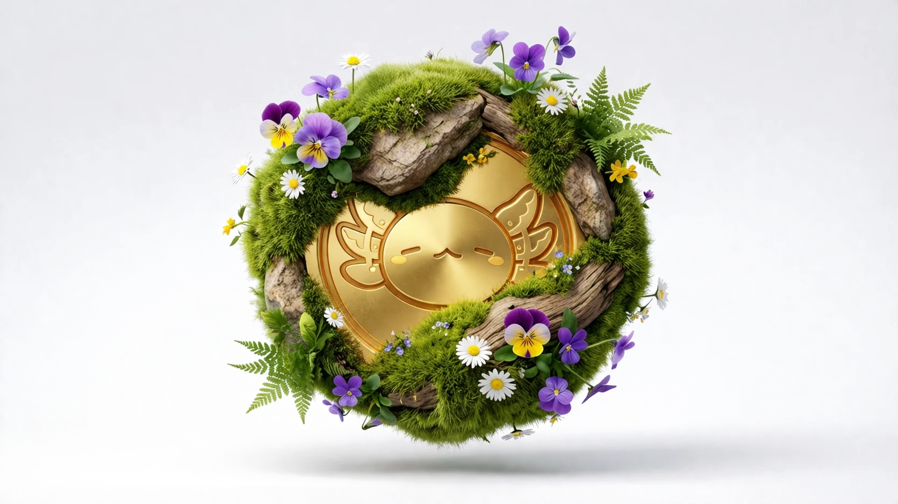

Who you are
Identity
Not a profile page — the self you carry into every room. Games, rank, how you actually like to play, languages, region, and when you're around.

ZenithConcept in development — seeking backers and partners
Zenith is a community-first gaming platform. This page presents the concept, the reasoning behind it, and what we are asking for. It is not a product announcement.
Nothing here asks anyone to change their behaviour. The habit exists — it is just spread across tools that were never designed to hold it.
Squads form in Discord servers. Teammates are found through LFG posts and subreddits. Coaching happens over DMs and spreadsheets. Communities organise game nights in group chats and lose half the people to the wrong timezone.
All of this is people trying to build something durable out of tools that only understand a single session. The demand is not in question. The container is.
A good run ends and there is no thread back.
You play three excellent matches with someone, the lobby dissolves, and the connection goes with it. Nothing carries forward.
Language and region split the room.
Skill is global. Communication is not. Great players end up unable to play together for reasons no matchmaker accounts for.
Random queues rarely reward decency.
Being someone worth playing with earns nothing and is invisible to the system that assigns you teammates.
The conversation lives in four apps.
The game, Discord, a chat app, and wherever the clip went. Context is lost at every boundary.
Skill and effort go uncompensated.
Coaching a friend, hosting a night, keeping a community civil — all real work, none of it recognised or rewarded.
Because every existing player owns a different part of the problem, and none of them owns this one.
Optimise for the match.
Their responsibility ends at the results screen. A matchmaker is measured on queue time and balance — never on whether you wanted to play with those people again.
Solves the conversation, not the discovery.
It is excellent once you already know who to talk to. It has no opinion about who you should meet, and no ambition to have one.
Solve the session, not the relationship.
They fill a lobby now. They are not built to make that group persist past tonight.
Monetise skill, ignore community.
Marketplaces treat a lesson as a transaction between strangers, with nothing left behind afterwards.
Nobody owns the space between matches.
The premise everything else follows from
The durable asset in multiplayer is not the match. It is the relationship between the people in it. Zenith treats that relationship as the product — and gives it somewhere to live, a reason to persist, and an economy that rewards the people who make it good.
Six parts, in the order a person meets them. Together they close a loop: you arrive, you find people, you stay, you contribute, you are rewarded, you give it back.
Who you are
Not a profile page — the self you carry into every room. Games, rank, how you actually like to play, languages, region, and when you're around.
Who you find
Filter by game, rank, region, language and temperament. The goal is never to fill a lobby; it is to assemble a group that lasts.
Where you stay
Live voice rooms, squad spaces, public and private groups, game nights and tournaments. One place that outlasts the match.
What you offer
Coaching, ranked runs and hosted events with experienced players and creators — so the people who are good at this can turn it into something real.
What you earn
Earned by showing up for people: challenges, tournaments, tips, hosting a room, helping a teammate improve.
What it buys
Collectible stickers, animated reactions, gifts sent to creators and friends, and seasonal pieces that do not return.

Brand and character design are complete. Interface screens are still to come — no mockups appear here that would imply a build state we have not reached.
Coins are earned by improving the community and spent on the people who improve it. Value returns to the behaviour that produced it.

Most game economies reward time served. Zenith's rewards participation that benefits other people — hosting, coaching, organising, tipping.
That is a design decision with a business consequence: the behaviour the economy pays for is the same behaviour that retains users.
An open question we are actively working through, stated plainly rather than glossed over.
The concept defines how players earn and spend coins. It does not yet define where Zenith's revenue comes from. These are the candidate models:
Naming the open question is deliberate. A revenue model asserted before it is tested is worth less than a clear account of which options are on the table and what would decide between them.
Creators bring the communities. Communities give creators a reason to stay. Each side makes the other more valuable.
The supply side is not a cost centre to be acquired — it is a user segment with its own reason to be here. That is what makes the loop compound rather than leak.
Community-first play moved to the centre of gaming culture.
Who you play with is now a bigger determinant of whether you keep playing than what you play.
Creators already act as community anchors.
They do the work of organising and retaining communities with no purpose-built home for it.
Players expect participation to be worth something.
Battle passes taught a generation that time in a game accrues value. Nothing yet does that for time spent on people.
These are stated as judgements, not findings. No market figure appears anywhere on this page unless it can be sourced.
Replace with a plain statement of what exists today, and a phased roadmap rather than dates.
Concept stage is credible on its own terms. Vagueness is not. This section should be the shortest and the most specific on the page.
Names, roles, and one line of relevant background each. A solo founder is fine — say so.
This changes with the audience — tell me which and I will write it:
If the reasoning here matches something you have been thinking about, we would like to talk — whether that is capital, partnership, or an early community to build with.
Contact address is a placeholder — replace with the address you want used publicly.